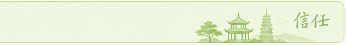

Личная репутация руководителя — в основе каждого маршрута. Мы заранее показываем семье документы, источники, сроки и границы ответственности.

НЕ ТОЛЬКО СЛОВА
Люди, встречи и проекты, за которыми стоит личное участие
Павел участвует в общественных, деловых и благотворительных инициативах в России и Китае. Для семьи это не формальная биография, а понятный контекст: кто лично отвечает за работу StudyGo и где можно проверить публичную деятельность руководителя.
01Публичная ответственность
С сентября 2025 года Павел публично сообщает о работе помощником председателя Общественной палаты Республики Калмыкия.
02Социальные проекты для детей
В открытых материалах зафиксировано участие в школьных благотворительных акциях и запуске секций бадминтона, в том числе для детей с нарушениями зрения.
03Практический контекст Китая
В ноябре 2025 года Павел участвовал в VI Российско-китайском форуме предпринимателей в Сиане в составе делегации «Деловой России».
ФОТОЛЕТОПИСЬ
В работе и общественной жизни
Нажмите на фотографию, чтобы рассмотреть её крупнее.
ПЕРВОИСТОЧНИКИ
Публичные заметки Павла
Ссылки ведут на исходные публикации. Там можно самостоятельно проверить даты, контекст мероприятий, фотографии и формулировки автора.